Terraria
Tap a control on the controller or in the list to see it light up.
Start here
Move
Walk left/right, climb.
Aim cursor
Point where to dig, build, attack.
Use / Attack
Swing, mine, place blocks.
Jump
Hold to jump higher.
Inventory
Open bag & crafting.
Hotbar
Previous / next item.
Default PC (Steam) controller bindings from the Official Terraria Wiki's Game controls page, "Desktop (controller)" column. Settings → Controller → Controller Bindings lets you change any of them.
Movement
| Action | What it does | Button |
|---|---|---|
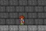 | Move | Left stick |
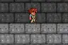 | Jump (hold for a higher jump) | LT |
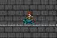 | Quick mount / dismount | A |
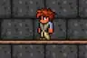 | Grapple hook (the wiki also lists B for Interact) | B |
Combat / Actions
| Action | What it does | Button |
|---|---|---|
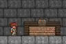 | Use item / attack / mine / place blocks | RT |
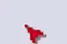 | Aim the cursor | Right stick |
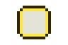 | Toggle Smart Cursor (auto-targets tiles) | R3 |
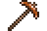 | Hold for Auto Select (picks the right tool) | L3 |
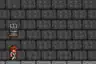 | Lock on to an enemy (press again to release) | X |
| Interact: open doors/chests, talk to NPCs | B | |
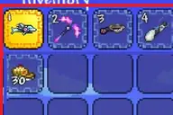 | Previous / next hotbar item | LB / RB |
Menus / Other
| Action | What it does | Button |
|---|---|---|
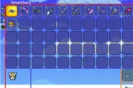 | Inventory + crafting | Y |
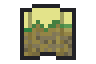 | Pause; the wiki also lists Start for the full-screen map [uncertain] | Menu |
| Toggle map style | View | |
| Dynamic hotbar (quick item shortcuts) | D-pad |
Button combinations
Two or more inputs at once or in a sequence. Tap a row to light up every button involved.
| Action | What it does | Buttons |
|---|---|---|
| Run and jump over gaps | Left stick + LT | |
| Grapple while moving: aim with the right stick, press B, steer with the left stick | Left stick + B | |
| Sequence: press R3 to turn Smart Cursor on, then hold RT to tunnel/build automatically | R3 + RT | |
| Hold L3 (Auto Select) and press RT: uses the best tool for whatever is under the cursor | L3 + RT | |
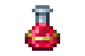 | Quick Heal: hold LB, push right stick → (drinks best healing potion) [uncertain] | LB + Right stick → |
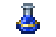 | Quick Mana: hold LB, push right stick ← [uncertain] | LB + Right stick ← |
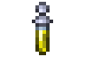 | Quick Buff: hold LB, push right stick ↓ (drinks all buff potions) [uncertain] | LB + Right stick ↓ |
Quick Heal / Mana / Buff: LB + right stick is the default on the Xbox console version. The wiki lists them as unbound on PC controller by default, so bind them in Settings → Controller first. B appears for both Grapple and Interact, and Start for both Pause and Full Map, in the wiki table.
Co-op tips
- Host a world and invite through Steam; pick "Classic" difficulty, where dying is softer.
- Split jobs: one digs and mines, the other builds the house.
- Stay close at night when zombies come out. Dig a shelter together.
Sources & image credits
- Animated and still thumbnails: Official Terraria Wiki files Hermes Boots (demo), Cloud in a Bottle (demo), Hardy Saddle (demo), Grappling Hook (demo), Block Swap (demo), Rainbow Cursor (demo), Lock on (demo), 1.4 Inventory, SmartCursorOn, Copper Pickaxe, Healing Potion, Mana Potion, Ironskin Potion, Map Button Full-Screen. Licensed CC BY-NC-SA 4.0; cropped, resized and converted to WebP for this page, and shared under the same license. Game art © Re-Logic.
- Controls: Terraria Wiki: Game controls.
- Icons without a picture are original drawings made for this site.
.gif){kind=link}
.gif){kind=link}
.gif){kind=link}
.gif){kind=link}
.gif){kind=link}
.gif){kind=link}
.gif){kind=link}